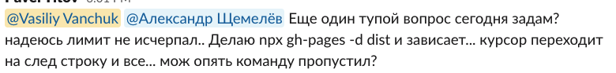
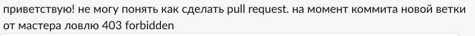

<!DOCTYPE html>
<html lang="en">
  <head>
    <meta charset="utf-8" />
    <meta name="viewport" content="width=device-width, initial-scale=1.0, maximum-scale=1.0, user-scalable=no" />

    <title>Занятие 1</title>
    <link rel="shortcut icon" href="./../favicon.ico" />
    <link rel="stylesheet" href="./../dist/reset.css" />
    <link rel="stylesheet" href="./../dist/reveal.css" />
    <link rel="stylesheet" href="./../dist/theme/white.css" id="theme" />
    <link rel="stylesheet" href="./../css/highlight/base16/zenburn.css" />

    <link rel="stylesheet" href="./../_assets/.reveal-md/styles.css" />


    <script>
      document.write(
        '<script src="http://' +
          (location.host || 'localhost').split(':')[0] +
          ':35729/livereload.js?snipver=1"></' +
          'script>'
      );
    </script>
  </head>
  <body>
    <div class="reveal">
      <div class="slides"><section ><section data-markdown><script type="text/template">

# OTUS

## Javascript Basic

</script></section><section data-markdown><script type="text/template">

### Обо мне


Василий Ванчук ([Li](https://www.linkedin.com/in/vvanchuk/)/[Yt](https://www.youtube.com/watch?v=Q5sQGV-n7xU&list=PLX3Jlot18dp4-a9a6B6DP0fYF3R1jjN4K))

</script></section><section data-markdown><script type="text/template">

### Преподаватели

[Страница о курсе](https://otus.ru/lessons/javascript-basic/?int_source=courses_catalog&int_term=programming)

</script></section><section data-markdown><script type="text/template">

> На курсе вы получите **навыки фронтенд-разработки**

</script></section><section data-markdown><script type="text/template">

1. Навыки != знания
1. Фронтенд разработка > Javascript

</script></section><section data-markdown><script type="text/template">

### Вопросы?

</script></section></section><section ><section data-markdown><script type="text/template">

## Как проходит общение

</script></section><section data-markdown><script type="text/template">

1. Slack (пишем в канал группы, пользуемся ветками в обсуждениях)
2. [Github](https://github.com/vvscode/otus--javascript-basic)
3. Чат с преподавателем в ЛК

</script></section><section data-markdown><script type="text/template">

Давайте задавать ["вопросы по-умному"](https://www.opennet.ru/docs/RUS/smart_question/)

</script></section><section data-markdown><script type="text/template">

Глупых вопросов нет. Зато есть

1. Не знание
1. Не понимание

На лекциях во всю действует [принцип Парето](https://ru.wikipedia.org/wiki/%D0%97%D0%B0%D0%BA%D0%BE%D0%BD_%D0%9F%D0%B0%D1%80%D0%B5%D1%82%D0%BE). Мы рассказываем ключевые вещи

</script></section><section data-markdown><script type="text/template">

Для работы со знание полезны пара ссылок:

- [Метод интервального повторения — лучший способ изучения языков программирования](https://habr.com/ru/post/196448/)
- [Преимущества метода интервального запоминания](http://web.archive.org/web/20170315102949/https://habrahabr.ru/company/everydaytools/blog/322286/)

</script></section><section data-markdown><script type="text/template">

И приложения на телефоне будут полезны:

- Enki [ios](https://apps.apple.com/us/app/enki-learn-code-data-skills/id993753145) / [android](https://play.google.com/store/apps/details?id=com.enki.insights&hl=ru&gl=US)
- Solo Learn [ios](https://apps.apple.com/us/app/sololearn-learn-to-code/id1210079064) / [android](https://play.google.com/store/apps/details?id=com.sololearn&hl=ru&gl=US)

</script></section><section data-markdown><script type="text/template">

Две крайности в задавании вопросов:

1. Спрашивать сразу
1. Не спрашивать вовремя

**Действуем по правилу n-часов**

</script></section><section data-markdown><script type="text/template">

Нужен [Rubber Duck Debugging](https://ru.wikipedia.org/wiki/%D0%9C%D0%B5%D1%82%D0%BE%D0%B4_%D1%83%D1%82%D1%91%D0%BD%D0%BA%D0%B0)?

Привлекай сокурсников и преподавателей

</script></section><section data-markdown><script type="text/template">


</script></section><section data-markdown><script type="text/template">



</script></section><section data-markdown><script type="text/template">


</script></section><section data-markdown><script type="text/template">


</script></section><section data-markdown><script type="text/template">


</script></section><section data-markdown><script type="text/template">


</script></section><section data-markdown><script type="text/template">



</script></section><section data-markdown><script type="text/template">

При решении вопроса пишем [postmortem](https://en.wikipedia.org/wiki/Postmortem_documentation) в общий чат (или в тред)

</script></section><section data-markdown><script type="text/template">

### Вопросы?

</script></section></section><section ><section data-markdown><script type="text/template">

### Процесс работы

</script></section><section data-markdown><script type="text/template">

1. Лекция
1. Задание - PR - Обратная связь - Изменения

</script></section><section data-markdown><script type="text/template">

1. Осмысленные атомарные коммиты, с понятными заголовками
1. 1 задание === 1(?) ветка === 1(?) PR

Большая часть обсуждений - в комментариях к PR

</script></section><section data-markdown><script type="text/template">

Еще пара моментов:

1. Задания не "слишком сложные". Это точно, я проверял и не только на себе
2. Если вам слишком легко - обращайтесь, мы исправим (персонально)

**No pain, no gain**

</script></section><section data-markdown><script type="text/template">

### Вопросы?

</script></section></section><section ><section data-markdown><script type="text/template">

### Требования к выполнению заданий

</script></section><section data-markdown><script type="text/template">

1. Мы работаем _"на стиле"_. Нет форматирования - задание не проверяется
1. Задание должно быть представлено к проверке и задеплоено на публичный ресурс

</script></section><section data-markdown><script type="text/template">

### Требования к репозиториям

</script></section><section data-markdown><script type="text/template">

1. Заполненная информация и README с описанием
1. Понятная модель ветвления и внятные сообщения коммитов
1. Настроенный CI/CD - проверка линтинга, тестов и деплой

_Это все разбирается в рамках первого модуля_

</script></section><section data-markdown><script type="text/template">

### Вопросы?

</script></section></section><section ><section data-markdown><script type="text/template">

## [Домашнее задание](https://github.com/vvscode/otus--javascript-basic/blob/master/lessons/lesson01/ht.md)

</script></section><section data-markdown><script type="text/template">

### Вопросы?

</script></section></section><section ><section data-markdown><script type="text/template">

### Ожидания от студентов

</script></section><section data-markdown><script type="text/template">

Программа предназначена для начинающих специалистов, кто:

- знаком с основами программирования и хочет развиваться как JavaScript-разработчик
- начал осваивать JavaScript, но хочет систематизировать знания и получить экспертную обратную связь
- Начал осваивать backend-разработку и хочет пополнить свой арсенал навыков frontend технологиями

</script></section><section data-markdown><script type="text/template">

##### Необходимые знания

Программа рассчитана на тех, кто знаком с базовым синтаксисом одного из языков программирования. Будет плюсом знание принципов ООП.

</script></section><section data-markdown><script type="text/template">

> «Меня немного удручает тот факт, что 199 из 200 соискателей программистских вакансий не умеют программировать. Повторю: они не умеют писать код. Вообще.» **Reginald Braithwaite**

[FizzBuzz, или почему программисты не умеют программировать](https://habr.com/ru/post/298134/)

</script></section><section data-markdown><script type="text/template">

[FizzBuzz task](https://codesandbox.io/s/github/vvscode/otus--javascript-basic/tree/fizzbuzz/lessons/lesson01/code/fizzbuzz)

</script></section><section data-markdown><script type="text/template">

### Вопросы?

</script></section></section><section ><section data-markdown><script type="text/template">

### Какие редакторы/инструменты использовать?

</script></section><section data-markdown><script type="text/template">

- VSCode
- WebStorm
- ...

</script></section><section data-markdown><script type="text/template">

### Вопросы?

</script></section></section><section ><section data-markdown><script type="text/template">

### Дополнительные материалы

</script></section><section data-markdown><script type="text/template">

- [Скринкаст по Git](https://learn.javascript.ru/screencast/git)
- [Современный учебник JavaScript](https://learn.javascript.ru/)
- [YT: FizzBuzz четыре варианта решения на JS](https://www.youtube.com/watch?v=TWmmfDvcYO0)

</script></section></section><section  data-markdown><script type="text/template">

Опрос о занятии

...
</script></section></div>
    </div>

    <script src="./../dist/reveal.js"></script>

    <script src="./../plugin/markdown/markdown.js"></script>
    <script src="./../plugin/highlight/highlight.js"></script>
    <script src="./../plugin/zoom/zoom.js"></script>
    <script src="./../plugin/notes/notes.js"></script>
    <script src="./../plugin/math/math.js"></script>
    <script>
      function extend() {
        var target = {};
        for (var i = 0; i < arguments.length; i++) {
          var source = arguments[i];
          for (var key in source) {
            if (source.hasOwnProperty(key)) {
              target[key] = source[key];
            }
          }
        }
        return target;
      }

      // default options to init reveal.js
      var defaultOptions = {
        controls: true,
        progress: true,
        history: true,
        center: true,
        transition: 'default', // none/fade/slide/convex/concave/zoom
        plugins: [
          RevealMarkdown,
          RevealHighlight,
          RevealZoom,
          RevealNotes,
          RevealMath
        ]
      };

      // options from URL query string
      var queryOptions = Reveal().getQueryHash() || {};

      var options = extend(defaultOptions, {"slideNumber":true,"hash":true,"history":false,"backgroundTransition":"fade","width":"80%"}, queryOptions);
    </script>


    <script>
      Reveal.initialize(options);
    </script>
  </body>
</html>
